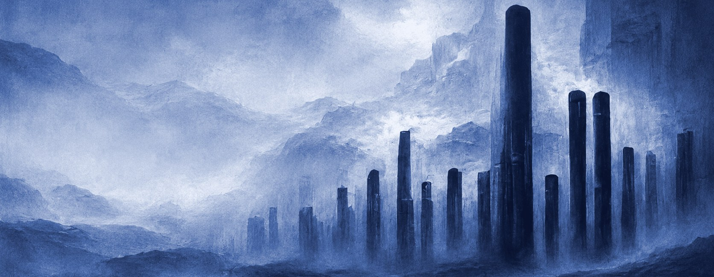
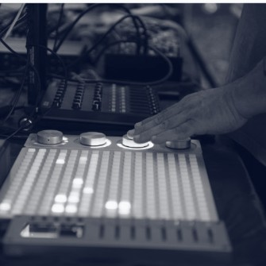
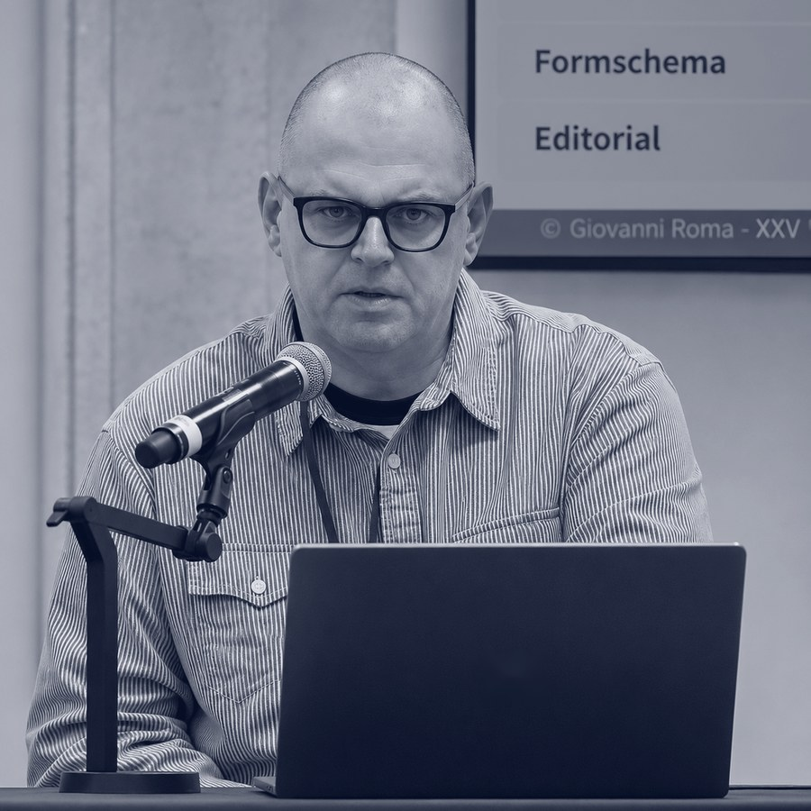

Computer Music Designer/Sound Designer/Sound Engineer
Giovanni Roma
Sound as a practice, a technology and a field of inquiry.
Doctoral researcher, Conservatorio «Domenico Cimarosa», Avellino — AFAM doctoral programme, XL cycle

Roles
Giovanni Roma is a computer music designer, sound designer and sound engineer. A doctoral researcher at the Conservatorio «Domenico Cimarosa» in Avellino, he studies computational strategies for the preservation of electroacoustic music, and works on live electronics, sound installations and electronic instrument building. Alongside his own practice, he has worked since 2001 as a post-production and mastering engineer for third parties, on material of every genre and for national and international labels.
Computer Music Designer
Realization of electroacoustic works and live electronics in collaboration with composers and performers, including spatialization and the design of custom interfaces and software environments.
Sound Designer
Composition and sound design for instruments, electronics and installations.
Sound Engineer
Mastering and audio engineering for third-party clients since 2001, on material of every kind and genre. Taught music post-production in professional training schools (2014–2022).
Selected projects
Installations, sound design & composition
- 2027
Crivello. Dove il vento ricorda, sound installation: an overturned, perforated Istrian batana in which the wind decides from which side the voice speaks, and in which language. Winner of the 2nd MUR National Competition for a temporary installation for the Day of Remembrance; to be installed in 2027 in the gardens of the Venice Architecture Biennale. Concept, electronic design, construction and sound design by G. Roma with the doctoral students of the Conservatorio «D. Cimarosa».
- 2025–
Ecosistemi Sonori, PRIN AFAM 2024. Design of the sound-diffusion system and of the sound-generation algorithms for an immersive sound garden. Principal investigator: Prof. Alba Francesca Battista.
- 2024
Trust. Audiovisual installation, designed and built for FuturoRemoto, Museo Irpino, Avellino.
- 2022–2023
El Aleph, for piano and live electronics in quadraphony. Presented at the Festival del Barocco, Museo Archeologico Nazionale, Naples (2023).
- 2022
PANopticon, collective composition for saxophone and four electronics performers, for the Electroacoustic Ensemble of the Conservatorio.
- 2021
Elaborazione di improvvisazioni di contrabbasso e sintetizzatore su canone Vuza 72 passi, acousmatic composition: improvisations for double bass and synthesizer, processed on a 72-step Vuza canon.
Publications
- 2026
G. Roma, A. F. Battista, “Supervised Memory: How Machines Can Preserve What We Cannot Hold”, International Computer Music Conference (ICMC 2026), Hamburg.
- 2026
G. Roma, A. F. Battista, “A Modular Annotation Toolset for Electroacoustic Score Preservation: Typology, Strategy and the Case for Procedural Standards”, ICAIHE 2026, Springer LNCS.
- 2026
G. Roma, A. F. Battista, “From Object to Relation: Annotating Semantic Instability in Stockhausen’s Solo (Nr. 19)”, XXV Colloquio di Informatica Musicale (CIM 2026). Winner of the AIMI Prize in memory of Aldo Piccialli.Supplementary materials: doi:10.5281/zenodo.21837959
Computer music & live electronics
- 2023–
Interferenze, Conservatorio «D. Cimarosa». Continuous work on the research and concert series: sound direction, algorithmic programming and technical coordination of the productions.
- 2022–
AuraLE. A system for guided collective electroacoustic improvisation, developed at the Conservatorio and used in concerts and performances since 2022.
- 2021–
Electroacoustic Ensemble of the Conservatorio «D. Cimarosa». Electronic instrument building, algorithmic programming and live-electronics performance.
Post-production credits
- 2001–2026
Mastering, mixing and editing for national and international releases on labels including Sony Music, BMG, Columbia, Elefant Records, peermusic and Artist First, with gold and platinum certified credits.
Selected credits, one at a time
Listen
Indie, left-field music imprints whose catalogues I am involved in.
Research

Aural-IA
My doctoral project investigates computational strategies for the preservation of electroacoustic music: works whose technological apparatus ages faster than the score that documents them, and which therefore call for methods of reconstruction, documentation and transmission suited to their nature.
Case studies draw on works by Harvey, Stockhausen and Boulez; the methods combine supervised geometric annotation of scores, human-in-the-loop workflows and retrieval-augmented generation.
Education
Master’s degree in Electronic Music
AuraLE: studio per un ambiente integrato per la progettazione e l’esecuzione di improvvisazioni elettroacustiche (“AuraLE: a study for an integrated environment for the design and performance of electroacoustic improvisation”). Supervisor: Prof. A. F. Battista.
Bachelor’s degree in Electronic Music
El Aleph: studio per una composizione per pianoforte e live electronics in quadrifonia (“El Aleph: a study for a composition for piano and live electronics in quadraphony”). Supervisor: Prof. A. F. Battista.
Selected images




Contact
For collaborations, teaching engagements and enquiries.